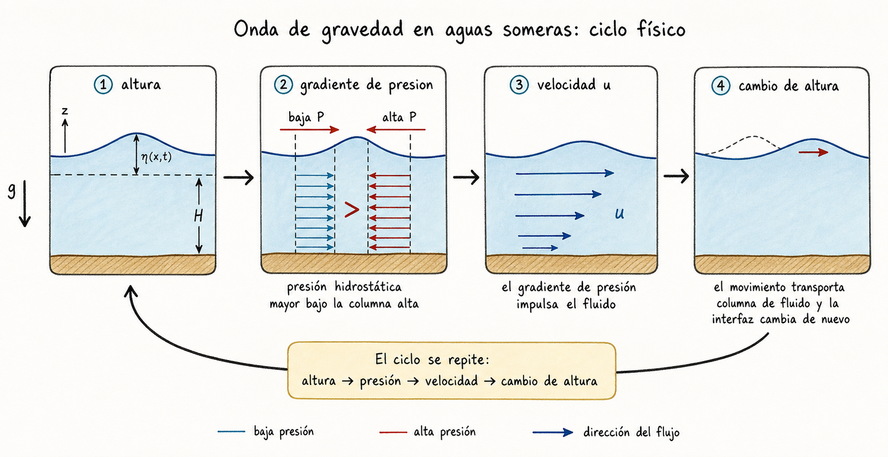
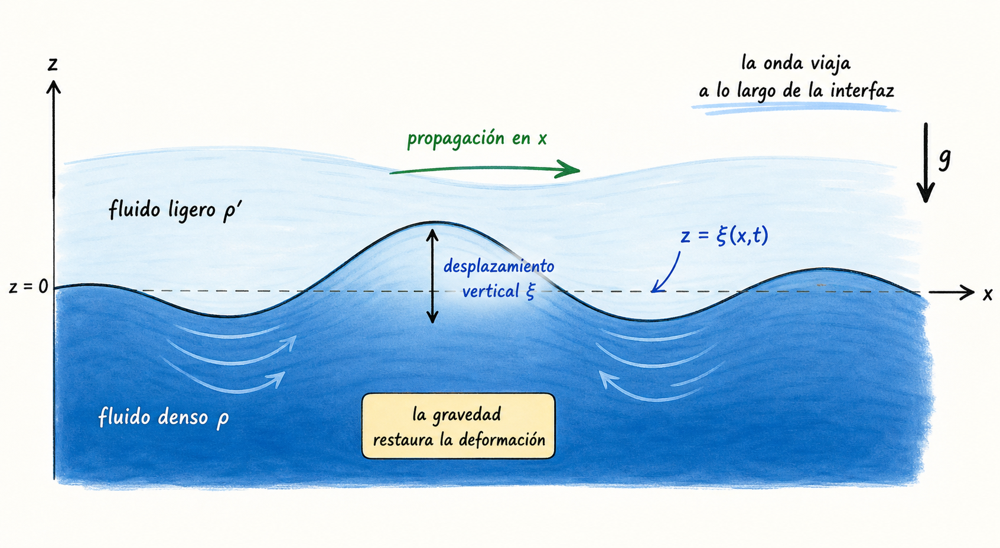

La idea central
Una perturbación pequeña es una pregunta de estabilidad.
Partimos de un estado base tranquilo. Luego lo empujamos apenas y miramos la primera respuesta. Si la física devuelve el sistema al equilibrio, aparece una frecuencia real y vemos una onda. Si la física refuerza el desplazamiento, la frecuencia se vuelve imaginaria y aparece crecimiento.
Paso 1
Linealizar no es borrar: es mirar solo el primer gesto.
Para un medio inicialmente uniforme y en reposo escribimos ρ = ρ0 + Δρ, p = p0 + Δp y v = Δv. En continuidad, el producto Δρ Δv es de segundo orden y queda fuera.
En Euler ocurre algo parecido. Aunque 1/ρ = 1/(ρ0 + Δρ), la corrección -Δρ/ρ02 solo multiplicaría a ∇Δp. Eso también es producto de perturbaciones.
Ecuaciones que sobreviven
- ∂tΔρ + ρ0∇·Δv = 0
- ∂tΔv = -(1/ρ0)∇Δp
- Δp = cs2Δρ
Rastro algebraico
El cálculo enseña qué términos tienen derecho a quedarse.
La linealización no es una receta para simplificar por gusto. Es una contabilidad de tamaños: lo que contiene una sola perturbación se conserva; lo que multiplica dos perturbaciones se considera de segundo orden y se descarta en el diagnóstico inicial.
Continuidad: de masa exacta a masa linealizada
∂tρ + ∇·(ρv) = 0
ρ = ρ0 + Δρ, v = Δv
∂t(ρ0 + Δρ) + ∇·[(ρ0 + Δρ)Δv] = 0
∂tΔρ + ρ0∇·Δv + ∇·(Δρ Δv) = 0
∇·(Δρ Δv)producto de perturbaciones
∂tΔρ + ρ0∇·Δv = 0
Euler: por qué aparece solo ∇Δp/ρ0
∂tv + (v·∇)v = -(1/ρ)∇p
(Δv·∇)Δvtambién es segundo orden
1/(ρ0 + Δρ) = (1/ρ0)(1 + Δρ/ρ0)-1
1/ρ ≈ 1/ρ0 - Δρ/ρ02
(1/ρ)∇p ≈ (1/ρ0)∇Δp - (Δρ/ρ02)∇Δp
(Δρ)∇Δpproducto de perturbaciones
∂tΔv = -(1/ρ0)∇Δp
Paso 2
El sonido es el laboratorio limpio de la restauración por presión.
La presión aumenta donde el fluido se comprime. Ese gradiente de presión empuja el material en sentido contrario a la compresión. Al unir continuidad, Euler linealizada y cierre barotrópico aparece la ecuación de onda:
Cómo se arma la ecuación de onda
∂tΔρ + ρ0∇·Δv = 0
∂t2Δρ + ρ0∇·(∂tΔv) = 0
∂tΔv = -(1/ρ0)∇Δp
∂t2Δρ - ∇²Δp = 0
Δp = cs2Δρ
∂t2Δρ = cs2∇²Δρ
Aquí el cierre barotrópico no es un detalle: es la regla que traduce compresión en presión. Sin esa relación, todavía no hay una onda cerrada.
La imagen física
Primero mira el movimiento: una altura produce presión, la presión produce flujo.
Una onda en un fluido no es solamente una curva que sube y baja. En cada cresta hay más columna de fluido, por tanto cambia la presión hidrostática. Esa diferencia de presión empuja al fluido y el movimiento vuelve a cambiar la altura de la superficie o de la interfaz. Esa es la rueda física que después escribimos con ecuaciones.


Paso 3
Con gravedad, el equilibrio ya no es uniforme: es hidrostático.
En un fluido estratificado, una parcela desplazada hacia arriba conserva aproximadamente su relación adiabática, mientras el entorno cambia con la altura. La comparación entre la densidad de la parcela y la densidad del entorno decide la aceleración.
Esa comparación se resume en una frecuencia de flotabilidad: si N² > 0, la parcela oscila alrededor del equilibrio; si N² < 0, se aleja y la estratificación es convectivamente inestable.
Flotabilidad en cálculo
La parcela compara su densidad con la del entorno.
El desplazamiento vertical pequeño δz permite comparar dos expansiones: cómo cambia la densidad del entorno con altura y cómo cambia la densidad de la parcela si se mueve casi adiabáticamente. La diferencia entre ambas produce una fuerza neta.
Comparar entorno y parcela
ρent(z + δz) ≈ ρ + (dρ/dz)δz
pent(z + δz) ≈ p + (dp/dz)δz
p/ργ = constanteparcela adiabática
Δρpar/ρ = (1/γ) Δpent/p
ρpar ≈ ρ + (ρ/γp)(dp/dz)δz
De fuerza neta a frecuencia de Brunt-Väisälä
Fz/V = ρentg - ρparg
d²δz/dt² = g(ρent - ρpar)/ρ
d²δz/dt² = -N²δz
N² = -g/ρ [(dρ/dz) - (ρ/γp)(dp/dz)]
N² > 0restauración y oscilación
N² < 0aceleración en el sentido del desplazamiento
Paso 4
En la interfaz, el signo de la misma fórmula separa onda e inestabilidad.
Para dos fluidos ideales, incompresibles e irrotacionales, la perturbación de la interfaz se toma como ξ(x,t)=A exp[i(kx-ωt)]. El potencial de velocidad satisface ∇²φ=0 y decae lejos de la interfaz. Las condiciones cinemática y dinámica llevan a:
Por qué aparece la razón (ρ − ρ')/(ρ + ρ')
ξ = A exp[i(kx − ωt)]
φ = B exp(kz) exp[i(kx − ωt)]fluido inferior
φ' = B' exp(−kz) exp[i(kx − ωt)]fluido superior
∂tξ = ∂zφ|0 ⇒ B = −iωA/k
∂tξ = ∂zφ'|0 ⇒ B' = iωA/k
p1 = −ρ∂tφ, p'1 = −ρ'∂tφ'
p0(ξ) ≈ p0(0) − ρgξ
p'0(ξ) ≈ p'0(0) − ρ'gξ
ptot(ξ) = p'tot(ξ)
ω² = gk(ρ − ρ')/(ρ + ρ')
El numerador mide quién pesa más abajo que arriba. El denominador aparece porque ambos fluidos deben moverse: la inercia efectiva es la suma ρ + ρ'.
Derivación guiada
Las condiciones de frontera son donde la física entra.
Diagnóstico final
La pregunta no es “¿hay una sinusoidal?”, sino “¿qué hace la física con ella?”.
ω² > 0
Frecuencia real. La perturbación oscila: sonido, parcela estable u onda de gravedad de superficie.
ω² < 0
Frecuencia imaginaria. Una rama crece como eσt: inestabilidad.
Límite
El análisis lineal solo diagnostica el arranque. Cuando la amplitud crece, entran términos no lineales.
Para seguir leyendo
Lautrup, Physics of Continuous Matter, capítulo 14 para ondas sonoras de pequeña amplitud; Clarke & Carswell, Principles of Astrophysical Fluid Dynamics, capítulo 10 para flotabilidad, ondas de gravedad e inestabilidad de Rayleigh-Taylor.